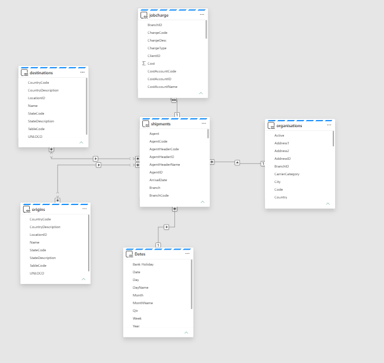

Problem
There was no central reporting data environment. Reports connected directly to applications and similar transformations were repeatedly rebuilt for individual reports.
Building a central data and reporting environment from the ground up to support reporting across the business
There was no central reporting data environment. Reports connected directly to applications and similar transformations were repeatedly rebuilt for individual reports.
I introduced Microsoft Fabric and developed a managed route from operational sources through ingestion, transformation and storage to reusable models and Power BI.
The business now has a central reporting environment that supports financial, operational and management reporting with more consistent and reliable data.
Where the work started
Reporting was built directly against separate business applications. Data preparation and business rules were repeated across reports, making changes harder to manage and increasing the risk of inconsistent results.
As reporting needs grew, the business needed a central environment that could support different sources, refresh needs and reporting audiences without recreating the same work each time.
What I introduced
I introduced Microsoft Fabric and developed the environment in stages: bringing in source data, applying transformations, organising report-ready tables in a Lakehouse, creating reusable semantic models and publishing reporting through Power BI.
Main technical example
CargoWise contains thousands of interconnected tables covering different areas of the business. The database is designed to support operational processes, which makes extracting and preparing data for reporting more complicated.
Rather than bringing everything into Fabric, I use SQL to extract the information needed, combine tables and apply business logic to create clearer datasets for reporting. Shipments are used here as one example of the approach applied across the wider database.

I use SQL to combine CargoWise tables, make the data easier to understand and create additional fields needed for reporting. By carrying out these transformations at source, less processing is needed in Fabric, helping reduce capacity usage and making data preparation more efficient.
The three dropdowns use selected extracts from my original queries. Shipments remain the main source-to-model example, while the other extracts show supporting SQL techniques without turning the case study into a SQL tutorial.
These extracts first connect shipment records to related organisation, branch and department dimensions, then use filtered subqueries to select the required address type and emissions field before joining them to the shipment.
LEFT JOIN jobheader ON JH_ParentID = JS_PK
LEFT JOIN ORGADDRESS OAL ON JH_OA_LocalChargesAddr = OAL.OA_PK
LEFT JOIN ORGHEADER OHL ON OAL.OA_OH = OHL.OH_PK
LEFT JOIN ORGADDRESS OAA ON JH_OA_AgentCollectAddr = OAA.OA_PK
LEFT JOIN ORGHEADER OHA ON OAA.OA_OH = OHA.OH_PK
LEFT JOIN GLBBRANCH ON JH_GB = GB_PK
LEFT JOIN GlbDepartment ON JH_GE = GE_PK
LEFT JOIN (
SELECT
E2_ParentID,
E2_OA_Address,
E2_AddressType
FROM jobdocaddress
WHERE E2_AddressType = 'CRD'
) AS SHP ON SHP.E2_ParentID = JS_PK
LEFT JOIN (
SELECT XV_DATA, XV_ParentID
FROM GENCUSTOMADDONVALUE
WHERE XV_NAME = 'Emissions (co2e)'
) AS EE ON JS_PK = EE.XV_ParentIDThis Organisation Health extract ranks organisations by revenue, calculates activity and average-value measures, and turns the results into clear reporting bands.
Select
RANK() OVER (ORDER BY SUM(JR_LocalSellAmt) DESC) AS Rank,
OH_Code as Code,
OH_Fullname as Name,
Count(DISTINCT(JH_PK)) AS Jobs,
SUM(JR_LocalSellAmt) as Revenue,
CAST(SUM(JR_LocalSellAmt) as DECIMAL(18,2))/ NULLIF(COUNT(DISTINCT JH_PK),0) AS AveragePerJob,
MAX(JH_SystemCreateTimeUtc) as LastJobDate,
DATEDIFF(Day,MAX(JH_SystemCreateTimeUtc),GETDATE()) AS DaysSinceLastJob,
Case
WHEN SUM(JR_LocalSellAmt) > 100000 THEN 'Gold'
WHEN SUM(JR_LocalSellAmt) > 25000 THEN 'Silver'
Else 'Bronze'
end as HealthBandThe first extract uses a CTE and ROW_NUMBER() to prioritise one organisation relationship for each product. The second uses a window function to calculate a running inventory balance for each organisation over time.
WITH RankedRelations AS (
SELECT
OU_OP,
OU_OH,
OU_Relationship,
OU_SystemCreateTimeUTC,
ROW_NUMBER() OVER (
PARTITION BY OU_OP
ORDER BY
CASE OU_Relationship
WHEN 'OWN' THEN 1
WHEN 'BTH' THEN 2
WHEN 'SUP' THEN 3
ELSE 4
END,
OU_SystemCreateTimeUTC DESC
) AS rn
FROM OrgPartRelation
WHERE OU_Relationship IN ('OWN','BTH','SUP')
)Running inventory calculation
SELECT *,
SUM(Units) OVER (
PARTITION BY OrganisationID
ORDER BY FinalisedDate
ROWS BETWEEN UNBOUNDED PRECEDING AND CURRENT ROW
) AS RunningInventory
The data extracted and transformed from different business applications is stored centrally in Microsoft Fabric, creating reusable datasets that can support reporting across the business.
From there, I build semantic models to bring together the information needed for different reports, rather than repeatedly preparing the same data from the original applications.
The shipment model is one example of how I've organised data into a clearer structure for Power BI.

Supporting ingestion examples
Different business applications require different approaches. Alongside CargoWise, I have implemented integrations using APIs, notebooks, Dataflow Gen2 and pipelines according to the source and reporting need.
Centralising operational data and creating reusable report-ready tables.
Comparing Shopify inventory with CargoWise to identify differences.
Combining quotation data with CargoWise for a wider view of quote activity.

I researched and implemented this API-based approach and continue to manage it. The extract shows the pagination pattern without credentials, shop names or warehouse identifiers.
all_inventory = []
while inventory_url:
response = requests.get(inventory_url, headers=headers)
response.raise_for_status()
data = response.json()
all_inventory.extend(data.get("inventory_levels", []))
next_url = None
link_header = response.headers.get("Link")
if link_header:
for link in link_header.split(","):
if 'rel="next"' in link:
next_url = link.split(";")[0].strip(" <>")
break
inventory_url = next_urlDataflow Gen2 is also used for sources including PeopleHR, SharePoint and Viva Insights, with Power Query transformations and reusable date tables. These are described here without adding more screenshots, keeping the case study focused on the overall environment.
Keeping the platform dependable
The platform is organised through Fabric workspaces, with deployment pipelines and GitHub integration supporting controlled changes. Refresh schedules are set according to reporting need rather than applying one frequency to every dataset.
Deployment pipelines separate stages of delivery and reduce the risk of changes being made directly in the live reporting environment.
GitHub integration provides a clearer record of changes and supports more structured development.
Hourly, daily and monthly refresh schedules are used according to how current each area of reporting needs to be.
What the business has now
The environment supports financial, operational and management reporting across different departments. Reusable datasets and semantic models provide a clearer route from source applications to Power BI, while access can be managed through the reporting app and workspace structure.
Performance, budgets, forecasts and controlled management access.
Shipments, transport, productivity, inventory and process visibility.
Consistent information for monitoring performance and supporting decisions.
The environment has evolved as reporting use and data volumes have grown. For CargoWise, moving more transformation work from an early Dataflow Gen2 approach into SQL-based ingestion made the logic easier to inspect, reuse and manage.
The main lesson has been to choose the method that best fits each source rather than forcing every integration into the same pattern. SQL, notebooks, APIs, Dataflow Gen2 and pipelines each have a place in the platform.
A central reporting environment was created where none existed before.
Data from separate business applications can now be ingested, transformed, stored and used through a managed Fabric platform.
Repeated preparation has been reduced through reusable reporting data.
Lakehouse tables, SQL transformations and semantic models can support more than one report instead of rebuilding similar logic each time.
Reporting is more consistent, reliable and easier to manage.
Controlled delivery, version history and refresh schedules provide a clearer way to maintain the environment as reporting needs change.
Data quality and process issues are easier to identify.
Bringing sources together — such as Shopify and CargoWise inventory — makes differences visible so they can be investigated rather than remaining hidden between systems.
Microsoft Fabric · Lakehouse · Data Factory · Pipelines · SQL · Python · Notebooks · Dataflow Gen2 · Power Query · ETL · Data Quality · Semantic Modelling · Power BI · DAX · GitHub · Deployment Pipelines